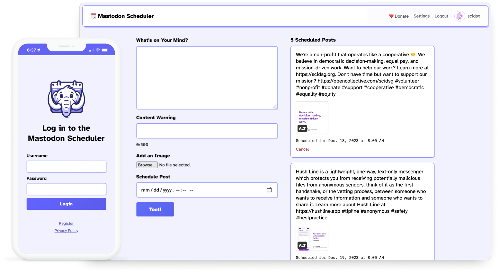

Social that doesn't go stale.
The Mastodon Scheduler is a free and open-source tool that makes it easy to schedule posts so your business or personal account stays fresh.
Scroll Down
You're busy and sometimes forget to post to Mastodon. That's okay, we forget, too. The Mastodon Scheduler helps you stay active on social media, without the hassle of posting daily.
About Mastodon Scheduler
Privacy and Security First
From HTTPS, to Tor, to encryption at rest, we go beyond conventional measures to protect you and your data.
Mastodon API Integration
We use the Mastodon API to post and schedule, meaning we don't store any of your post information on our servers.
Self-Hosting Ready
Prefer to host your own Mastodon Scheduler? Easily install it on your own server!
Donate to Support
The Mastodon Scheduler is free and open-source and relies on your donations to operate.
Donate NowAbout Science & Design
The Mastodon Scheduler is a free and open-source tool by Science & Design, a 501(c)(3) non-profit building software for free access to information and free speech online.